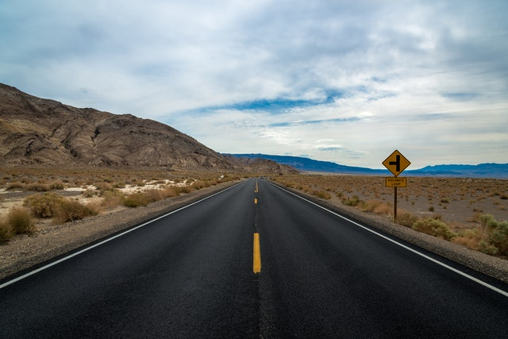
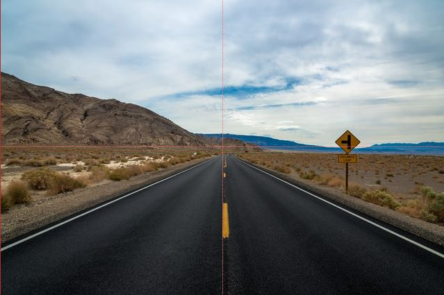
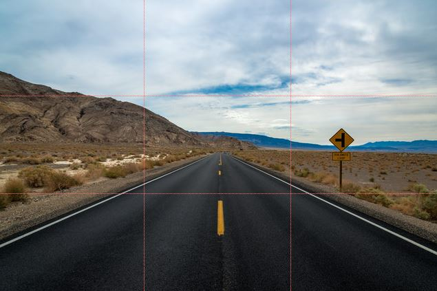

What is Composition?
Just the same as how a songwriter must compose a song, a photographer must compose an image. There are many techniques to create an image that is pleasing to the eye, and some are very simple to learn; you may already be familiar with some of them.
Take a look through to learn more about Balance, the Rule of Thirds, and Vanishing Points. Click on each image for a larger view.
 A vanishing point is a concept in visual art that dates back to the Renaissance period. In photographry, strong vanishing lines point the viewers eyes towards the subject or the center of the image. This sample picture uses the edges of the road and the yellow center line to point your vision right to the middle of the frame, and then to the mountains in the background.
{kind=link}
 Balance in the context of a picture means that there is an equal amount to look at on both sides. Symmetry is a good way to start balancing your pictures. In this picture, the center line of the road follows right along the middle of the image, and the horizon is right at the middle on the vertical axis.
{kind=link}
 A slightly more advanced method to compose your pictures is by using the rule of thirds. If you imagine a tic-tac-toe grid on a picture, aligning important visual elements within the boxes creates a natural ensemble that is generally pleasing to look at. Notice how the bottom third of this picture is filled by the road, while the top third is filled entirely by sky.
{kind=link}